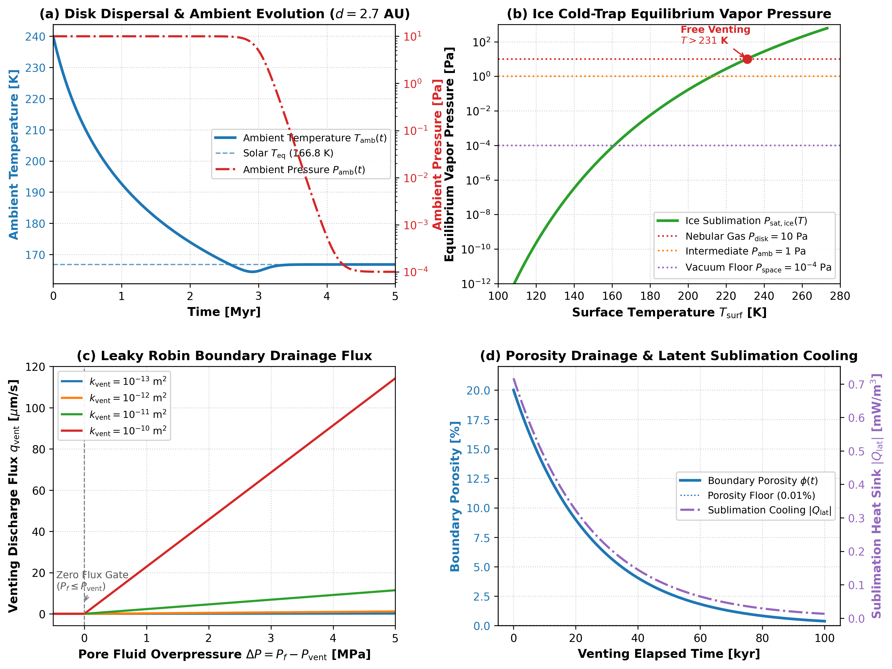

Cold Surface Venting and Disk Dispersal Validation
This module validates the cold surface venting boundary condition, ice cold-trap vapor pressure thermodynamics, protoplanetary disk dispersal transitions, and coupled marker porosity drainage with sublimation latent cooling in Erebus.jl.
1. Darcy Surface Drainage Boundary
Governing Formulation
At planetesimal-nebula boundary faces ($r = R_{\text{planet}}$), pore fluid escapes via a leaky Robin boundary condition:
\[q_{\text{vent}} = \frac{k_{\text{vent}}}{\eta_f} \frac{P_f - P_{\text{vent}}}{\Delta}\]
The corresponding volumetric fluid sink rate $S_{\text{vent}}$ [$\text{s}^{-1}$] applied to continuity row $kpf$ is:
\[S_{\text{vent}} = \frac{C_{\text{face}}}{\Delta} \max\left(0, P_f - P_{\text{vent}}\right)\]
where $C_{\text{face}} = \frac{k_{\text{vent}}}{\eta_f \Delta} \times f_{\text{conductance}}$ is face conductance.
Literature Anchors
- Young, E. D., Ash, R. D., England, P., & Rumble, D. (1999). Fluid flow in carbonaceous chondrite parent bodies and the origin of magnetites. Science, 286(5443), 1331-1335. https://doi.org/10.1126/science.286.5443.1331
- Fu, R. R., & Elkins-Tanton, L. T. (2014). The early thermal evolution of planetesimals: Implications for differentiated asteroids and carbonaceous chondrite parent bodies. Earth and Planetary Science Letters, 390, 128-137. https://doi.org/10.1016/j.epsl.2014.01.009
- Gerya, T. (2019). Introduction to Numerical Geodynamic Modelling (2nd ed.). Cambridge University Press. https://doi.org/10.1017/9781316534243
Invariants and Limits
- Equilibrium Flux Invariant: When $P_f \le P_{\text{vent}}$, venting flux $q_{\text{vent}} = 0$ exactly (fluid does not drain backward into the planetesimal).
- Monotonic Drainage: For $P_f > P_{\text{vent}}$, drainage flux $q_{\text{vent}}$ scales linearly with overpressure $\Delta P = P_f - P_{\text{vent}}$ and boundary permeability $k_{\text{vent}}$.
- Hydrofracture Gating: In
:hydrofracture_gatedmode, venting is suppressed unless Terzaghi effective pressure satisfies $P_t - P_f \le -\sigma_t$.
2. Ice Cold-Trap Thermodynamics & Clausius-Clapeyron Clamping
Governing Formulation
Water ice sublimation vapor pressure $P_{\text{sat,ice}}(T)$ [$\text{Pa}$] is computed via the integrated Clausius-Clapeyron equation anchored at the water triple point ($T_0 = 273.16\text{ K}$, $P_0 = 611.66\text{ Pa}$, $L_{\text{sub}} = 2.83\times 10^6\text{ J/kg}$, $R_v = 461.5\text{ J/(kg}\cdot\text{K)}$):
\[P_{\text{sat,ice}}(T) = P_0 \exp\left[-\frac{L_{\text{sub}}}{R_v}\left(\frac{1}{T} - \frac{1}{T_0}\right)\right]\]
The effective surface venting pressure is:
\[P_{\text{vent}} = \max\left(P_{\text{amb}}, P_{\text{sat,ice}}(T_{\text{surf}})\right)\]
Literature Anchors
- Washburn, E. W. (1924). The vapor pressure of ice and of water below the freezing point. Monthly Weather Review, 52(10), 488-490. doi:10.1175/1520-0493(1924)52<488:TVPOIA>2.0.CO;2.
- Kurokawa, H., Shibuya, T., Sekine, Y., Ehlmann, B. L., Usui, F., Kikuchi, S., & Yoda, M. (2022). Distant formation and differentiation of outer main belt asteroids and carbonaceous chondrite parent bodies. AGU Advances, 3(1), e2021AV000568. doi:10.1029/2021AV000568.
Invariants and Limits
- Triple-Point Anchor: At $T = 273.16\text{ K}$, $P_{\text{sat,ice}} = 611.66\text{ Pa}$ within $0.01\%$.
- Monotonicity: $\frac{dP_{\text{sat,ice}}}{dT} > 0$ for $0 < T < T_0$, saturating at $P_0$ for $T \ge T_0$.
- Deep Cold Clamping: At $T \le 100\text{ K}$, $P_{\text{sat,ice}} < 10^{-14}\text{ Pa} \ll P_{\text{amb}}$, such that $P_{\text{vent}} = P_{\text{amb}}$.
- Physical Argument Guard: $T \le 0\text{ K}$ throws
DomainError.
3. Protoplanetary Disk Dispersal & Solar Equilibrium
Governing Formulation
Nebular clearing follows a sigmoid function:
\[w_{\text{disp}}(t) = \frac{1}{1 + \exp\left[-\frac{t - t_{\text{disp}}}{\Delta t_{\text{disp}}}\right]}\]
Post-dispersal equilibrium temperature:
\[T_{\text{eq}} = \left[\frac{(1 - A) L_\odot}{16 \pi \sigma_{\text{SB}} d^2}\right]^{1/4}\]
Time-dependent ambient conditions:
\[T_{\text{amb}}(t) = (1 - w_{\text{disp}}(t)) T_{\text{disk}}(t) + w_{\text{disp}}(t) T_{\text{eq}}\]
\[P_{\text{amb}}(t) = (1 - w_{\text{disp}}(t)) P_{\text{amb,disk}} + w_{\text{disp}}(t) P_{\text{amb,space}}\]
Invariants and Limits
- Midpoint Symmetry: At $t = t_{\text{disp}}$, $w_{\text{disp}} = 0.5$ exactly.
- Early Asymptote: For $t \ll t_{\text{disp}}$, $w_{\text{disp}} \to 0$, $T_{\text{amb}} \to T_{\text{disk}}$, $P_{\text{amb}} \to P_{\text{amb,disk}}$.
- Late Asymptote: For $t \gg t_{\text{disp}}$, $w_{\text{disp}} \to 1$, $T_{\text{amb}} \to T_{\text{eq}}$, $P_{\text{amb}} \to P_{\text{amb,space}}$.
- Solar Distance Scaling: $T_{\text{eq}} \propto d^{-1/2}$; at $2.7\text{ AU}$ with default $A = 0.06$, $T_{\text{eq}} \approx 166.8\text{ K}$ ($165.0\text{ K}$ for $A = 0.1$).
4. Marker Porosity Drainage & Latent Cooling
Governing Formulation
Marker porosity drains according to local venting flux:
\[\phi_m(t + \Delta t) = \max\left(\phi_{\text{min}}, \phi_m(t) - S_{\text{vent}}(\mathbf{x}_m) \Delta t\right)\]
Cumulative vented mass:
\[\Delta M_{\text{vent}} = \sum_{m} \rho_f (\phi_{m,\text{old}} - \phi_{m,\text{new}}) V_{\text{marker}}\]
Sublimation latent cooling sink:
\[Q_{\text{lat}} = - L_{\text{sub}} \cdot \rho_f \cdot S_{\text{vent}} \le 0 \quad [\text{W/m}^3]\]
Invariants and Limits
- Porosity Clamping: $\phi_m \ge \phi_{\text{min}}$ under arbitrarily large time steps.
- Mass Conservation: $\Delta M_{\text{vent}} = \rho_f \Delta\bar{\phi} V_{\text{total}}$ within floating-point tolerance on a uniform marker lattice, and represents a volume-consistent statistical estimator after marker advection.
- Negative Definiteness: $Q_{\text{lat}} \le 0$ everywhere (venting extracts heat, never injects heat).
Benchmark Diagnostics
Figure 1 illustrates the coupled performance of cold surface venting across disk dispersal:

Figure 1: Four-panel benchmark validation for cold surface venting. (a) Ambient temperature transition from disk accretion heating to solar radiative equilibrium ($T_{\text{eq}} \approx 166.8\text{ K}$ for default $A = 0.06$) during disk dispersal. (b) Water ice equilibrium vapor pressure $P_{\text{sat,ice}}(T)$ across the cold-trap regime ($100\text{ to }273\text{ K}$). (c) Evolution of boundary pore fluid pressure and surface venting flux. (d) Cumulative vented fluid mass and thermostatic latent cooling rate.
Verification Test Suite
test/test_venting_thermodynamics.jl:@testset "Disk Dispersal Transition Weights & Invariants"@testset "Solar Radiative Equilibrium Temperature (T_eq)"@testset "Time-Evolving Ambient Conditions (T_amb, P_amb)"@testset "Water Ice Sublimation Vapor Pressure (Clausius-Clapeyron)"@testset "Surface Venting Boundary Pressure (Cold-Trap Coupling)"@testset "VentingConfig Validation & Serialization"
test/test_venting_darcy_sink.jl:@testset "Surface Face Boundary Detection & Leaky Robin Assembly"@testset "Analytical 1D Steady-State Darcy Flux Benchmark"@testset "sink_vented_marker_porosity! Invariants & Mass Conservation"@testset "Sublimation Latent Cooling Heat Sink Verification"
test/test_venting_integration.jl:@testset "Runtime loop with venting inactive (baseline)"@testset "Runtime loop with cold surface venting active"